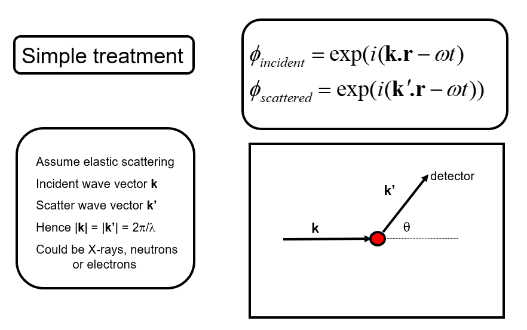
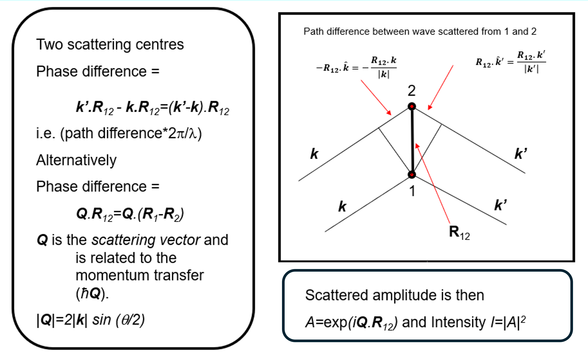
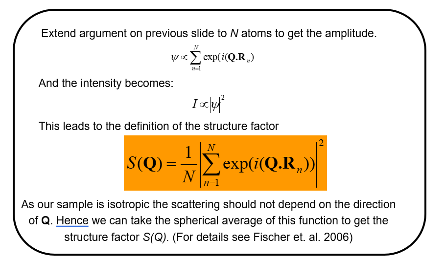
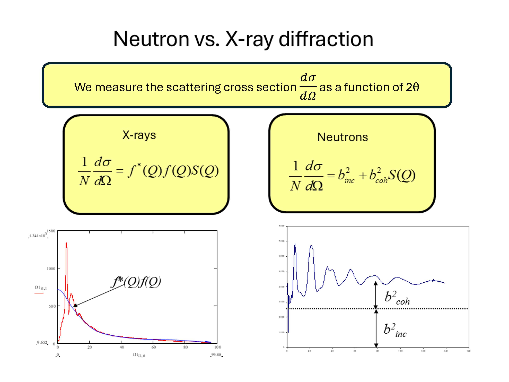
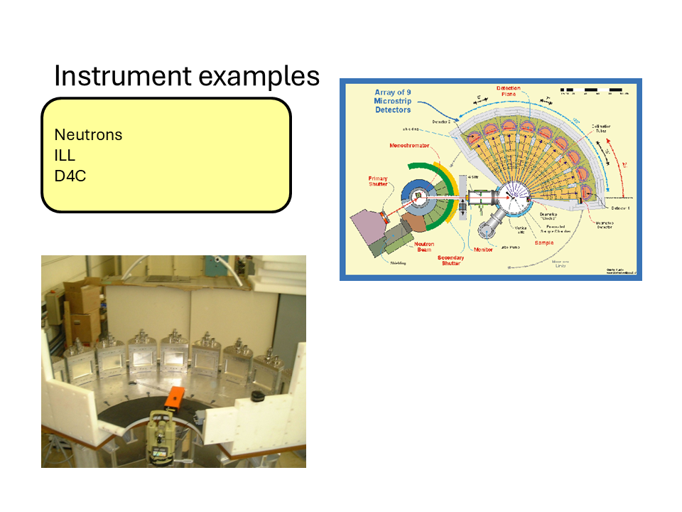
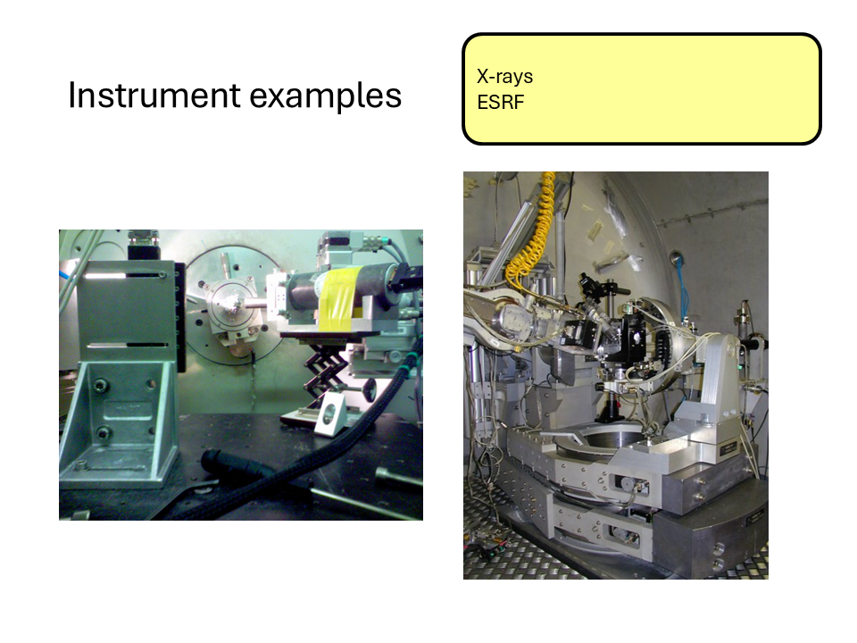

13 Measurements in reciprocal space
13.1 Diffraction
In the previous experimental section we saw how measurements of \(g(r)\) may be made by directly finding coordinates of particles in space. We saw how this could be applied to colloidal systems. The optical methods applied are confined to systems at or close to the diffraction limit, that for optical wavelengths is a few hundred nanometres. Another problem that may arise is that \(g(r)\) is a statistical quantity and to obtain meaningful results it must be calculated over a large number of particle positions and care must be taken to ensure that the system under study is homogeneous.
In order to determine \(g(r)\) directly in a similar way for atomic and molecular systems we would need to use wavelengths that are much less than the atomic size, that is beyond X-ray wavelengths. This is not practical. In contrast, it is possible to image at the atomic scale using electron microscopy. However, in this case it is not possible to image in the bulk in a similar way to confocal microscopy and studies are largely limited to 2D surfaces. Hence, most studies at this scale are based on diffraction methods - the topic of this part of the course.
Optically, you are aware from your study of waves that diffraction effects occur when the scale of the structure is of the same order of the wavelength of light. The same principle applies for atomic scales which means diffraction needs wavelengths around 0.1 nanometres (or 1 Å) for atomic scale studies.
0.1 nm is in the X-ray regime but it’s also accessible with thermal neutrons (~ 300K is approximately 0.18 nm) or electrons. (Exercise. Calculate the energy of a photon, neutron and electron corresponding to a wavelength of 0.1 nm.).
So how do we use diffraction in disordered systems to obtain structural information such as \(g(r)\)?
13.2 The structure factor - a simple approach.
We will not use a rigorous approach to diffraction (that requires quantum mechanics) but we will approach the relationship between the scattering of x-rays, neutrons and electrons by atoms by considering the following simple picture, with \(\phi\) the relevant wavefunction. We note that we haven’t included the strength or the specific way in which the atoms scatter at this point but have assumed an incoming quantum plane wave is scattered by the atoms. We also assume for the moment that we only have one atom type.

We then wish to understand how the scattered waves from different atoms interfere to give rise to a diffraction pattern (for example scattered intensity vs. angle). Let’s write \(\mathbf{Q}=\mathbf{k'}-\mathbf{k}\) the scattering vector.

We begin with the so-called Born approximation: let’s consider that the incident and scattered radiation are represented by plane waves, and only single-scattering events are considered. That is, each atom scatters only the incident wave, while the contribution of waves scattered by other atoms is neglected. Under these assumptions, Under these assumptions, the structure factor (note that this differs from the conventional crystallographic definition of the structure factor), also called interference function, especially in experimental contexts, can be written as

We note that \(N\) is just a normalizing factor to give the scattering per atom and that for a liquid (or any isotropic material) we need to take the spherical average of this function to return a function \(S(Q)\) that is isotropic (the same in all directions). (NB. This latter step would not be taken, in for example representing the scattering from a liquid crystal, where we know there is an orientation of the molecules in the liquid - the director - even though there is still liquid like disorder in the other directions).
A more formal derivation of the structure factor obtained in a scattering experiment for a single element may be found in Fischer et al. (2006) and may be written in terms of the differential scattering cross-section, \(\frac{d\sigma}{d\Omega}\), defined as the scattered intensity per unit solid angle divided by the incident flux. The scattered intensity measured at a detector a distance \(L\) from the sample is related to the differential cross-section through
\[ I_{\rm sc}(L,\theta,\phi) =\frac{I_{\rm inc}}{L^2} \frac{d\sigma}{d\Omega},\]
where \(I_{\rm inc}\) is the incident intensity and \(L\) is the sample-to-detector distance:
\[\frac{1}{N} \frac{d\sigma}{d\Omega} = b_{coh}^2 S(Q)+b_{incoh}^2,\]
for neutrons where \(b_{coh}\) is the coherent scattering length of the element and \(b_{incoh}\) is the incoherent scattering length that arises due to the difference in scattering by the nucleus when its nuclear spin (if it has a spin) is aligned or anti-aligned with the neutron and/or when it is different due to the nuclear scattering arising from different isotopes of the same element.
For the case of X-rays the corresponding quantity, in its simplest form is,
\[\frac{1}{N} \frac{d\sigma}{d\Omega}=f(Q)^2 S(Q)\]
where \(f\) is the scatterig form factor of an atom, and we note this is after corrections for the effects of polarization of the x-ray beam in the incident and scattered beam has been made.

From the figure we note the important difference between the neutron and X-ray diffraction patterns. At large values of \(Q\) the neutron diffraction cross-section tends to a constant value \(b^2_{coh}+b^2_{incoh}\) whereas for X-rays we see that the diffraction tends to zero at large \(Q\) due to the \(Q\) dependence of the X-ray form factor. The physical origin of this effect is that for neutrons it is the nucleus (with a size of a few femtometres) that is the scattering object whereas for X-rays it is the electron cloud around the atom (with dimensions of about a tenth of a nanometer) that is the scattering object. Hence for a thermal neutron (of wavelength 0.18 nm) the atoms in the material act as point scatterers whereas the scattering from X-rays is for an object of roughly the same wavelength. Hence the shape of \(f(Q)\) reflects the distribution of the electrons around the atom. This \(Q\) dependence of the form factor has important consequences when we consider materials composed of more than one element as we shall see shortly.
The effect is equivalent in optics to the difference from the diffraction pattern from a grating that is composed of very narrow slits compared to one composed of slit widths on the same scale as their separation cf.
\[I\sim \left(\frac{\sin \alpha}{\alpha}\right)^2\left(\frac{\sin N\beta}{\sin\beta}\right)^2\]
We also note that both \(b\) and \(f(Q)\) should be considered as complex quantities (that give rise to absorption and alter the scattering cross-section close to a neutron resonance or X-ray absorption edge).
Hence, provided we are able to make the experimental corrections we can see that, at least for a single element, \(S(Q)\) for the liquid or glass may be obtained directly.
Here are some images of some typical X-ray and neutron diffractometers at the ILL and ESRF central facilities.


13.3 The relationship between \(S(Q)\) and \(g(r)\) for a disordered material.
13.3.1 Conceptual Summary
The description above gives insight into the origins of the interference (diffraction) effects observed from a disordered arrangement of scatterers. There is a direct sine Fourier transform pair relationship between the radial distribution function \(g(r)\) and the structure factor \(S(Q)\) for the material and is as follows.
\[S(Q)=1+\frac{4\pi\rho}{Q}\int_0^{\infty}r(g(r)-1)\sin(Qr)dr\]
and
\[g(r)=1+\frac{1}{2\pi\rho r}\int_0^{\infty}Q(S(Q)-1)\sin(Qr)dQ\]
Again, we note that these quantities do not depend on the nature of the scattering. Hence, by measuring \(S(Q)\) we can in principle obtain \(g(r)\).
Starting from the definition of the structure factor,
\[ S(\mathbf Q)=\frac{1}{N}\left|\sum_{n=1}^{N} e^{i\mathbf Q\cdot\mathbf R_n}\right|^2, \]
expand the square modulus:
\[ S(\mathbf Q)=\frac{1}{N}\sum_{i=1}^{N}\sum_{j=1}^{N}e^{i\mathbf Q\cdot(\mathbf R_i-\mathbf R_j)}. \]
Separating the diagonal (\(i=j\)) and off-diagonal (\(i\neq j\)) terms, and rewriting the \(1/N\) sum on \(j\) as an average
\[ S(\mathbf Q)=\left\langle 1+\sum_{i\neq j}e^{i\mathbf Q\cdot(\mathbf R_i-\mathbf R_j)}\right\rangle, \]
which gives
\[ S(\mathbf Q)=1+\left\langle\sum_{i\neq j}e^{i\mathbf Q\cdot(\mathbf R_i-\mathbf R_j)}\right\rangle. \]
For a homogeneous system, fix one particle at the origin (always set \(\mathbf{r}_j=\mathbf{0}\)) and introduce the pair-correlation function
\[ g(\mathbf r)=\frac{1}{\rho}\left\langle\sum_{i\neq0}\delta(\mathbf r-\mathbf r_i)\right\rangle, \]
so that
\[ \rho\,g(\mathbf r)=\left\langle\sum_{i\neq0}\delta(\mathbf r-\mathbf r_i)\right\rangle. \]
Using this definition, the off-diagonal term can be rewritten as
\[ \frac{1}{N}\left\langle\sum_{i\neq j}e^{i\mathbf Q\cdot(\mathbf R_i-\mathbf R_j)}\right\rangle=\rho\int g(\mathbf r)\,e^{i\mathbf Q\cdot\mathbf r}\,d^3r. \]
Hence
\[ S(\mathbf Q)=1+\rho\int g(\mathbf r)\,e^{i\mathbf Q\cdot\mathbf r}\,d^3r. \]
which is almost the desired relation. However, since \(g(\mathbf r)\to1\) as \(r\to\infty\), the Fourier transform contains the contribution of the uniform background density, which produces a Dirac delta at \(\mathbf Q=0\). Removing this trivial contribution yields
\[ S(\mathbf Q)=1+\rho\int[g(\mathbf r)-1]\,e^{i\mathbf Q\cdot\mathbf r}\,d^3r. \]
for \(\mathbf{Q}\neq 0\), showing that the structure factor is the Fourier transform of the so-called total correlation function \(h(\mathbf r)=g(\mathbf r)-1\).
13.3.1.1 Isotropic Case
For an isotropic material,
\[ g(\mathbf r)=g(r),\qquad S(\mathbf Q)=S(Q). \]
Choose spherical coordinates with the polar axis along \(\mathbf Q\). Then
\[ \mathbf Q\cdot\mathbf r = Qr\cos\theta, \]
and
\[ d^3r=r^2\sin\theta\,dr\,d\theta\,d\phi. \]
Substituting into the Fourier transform gives
\[ S(Q)-1=\rho\int_0^\infty[g(r)-1]\,r^2\,dr\int_0^{2\pi}d\phi\int_0^\pi e^{iQr\cos\theta}\sin\theta\,d\theta. \]
The azimuthal integral is
\[ \int_0^{2\pi}d\phi=2\pi. \]
For the polar integral, let
\[ u=\cos\theta,\qquad du=-\sin\theta\,d\theta. \]
Then
\[ \int_0^\pi e^{iQr\cos\theta}\sin\theta\,d\theta=\int_{-1}^{1}e^{iQru}\,du. \]
Evaluating,
\[ \int_{-1}^{1}e^{iQru}\,du=\left[\frac{e^{iQru}}{iQr}\right]_{-1}^{1}=\frac{e^{iQr}-e^{-iQr}}{iQr}=\frac{2\sin(Qr)}{Qr}. \]
Therefore,
\[ \int d\Omega\,e^{i\mathbf Q\cdot\mathbf r}=2\pi\frac{2\sin(Qr)}{Qr}=4\pi\frac{\sin(Qr)}{Qr}. \]
Substituting back,
\[ \boxed{S(Q)=1+4\pi\rho\int_0^\infty[g(r)-1]\frac{\sin(Qr)}{Qr}\,r^2\,dr.} \]
13.4 Practical points
In practice it is not possible to measure the complete \(S(Q)\) function in an experiment. Apart from statistical and systematic uncertainties in the measurements, we see the maximum value of \(Q\) that can be measured is determined by the maximum scattering angle and the wavelength of the x-ray, neutron etc. So for \(2\theta= 180^\circ\) (\(\pi\)), the maximum possible scattering angle, we obtain \(Q_{\max}=\frac{4\pi}{\lambda}\), where \(\lambda\) is the wavelength. There is also a minimum value of \(Q\), \(Q_{\min}\) that is determined by the divergence of the incident beam and the distance and shielding of the detector. Hence in the transform from \(S(Q)\) to \(g(r)\) the limits are \(Q_{\min}\) and \(Q_{\max}\) that are determined by experimental constraints.
The maximum measured value, \(Q_{\max}\), determines the real-space resolution that can be achieved after Fourier transformation. Higher values of \(Q_{\max}\) generally allow finer structural detail to be resolved.
The minimum measured value, \(Q_{\min}\), determines the largest structural length scales that can be probed. Structural features occurring below \(Q_{\min}\) cannot be measured directly.
As a result, diffraction experiments always involve a compromise between access to long-range structure (low \(Q\)) and high real-space resolution (high \(Q\)).
13.5 Partial Structure Factors
As we noted previously, the discussion so far has only considered mono-atomic systems - a very limited case! In reality we deal with materials that contain more than one atom type and hence we need a way to describe the arrangements of different types of atom around each other, i.e., how do we interpret the diffraction pattern from a multicomponent system? Well, we can extend our idea of the radial distribution function and introduce the idea of a partial radial distribution function, \(g_{\alpha\beta}(r)\), which may be described as the radial distribution function for the arrangement of atoms of type \(\beta\) around those of type \(\alpha\). We note also that \(\alpha\) and \(\beta\) can represent the same atom type. Take for example a glass such as germanium dioxide (\(GeO_2\)). We can define four partial radial distribution functions, \(g_{GeGe}(r)\) describing the distribution of the germanium atoms around a germanium atom at the origin, \(g_{OO}(r)\) describing the distribution of oxygen atoms around an oxygen atom at the origin and \(g_{GeO}(r)\) describing the distribution of oxygen atoms around a germanium atom at the origin and vice versa (\(g_{OGe}(r)\)). With a little thought we can also see that \(g_{GeO}(r)=g_{OGe}(r)\) so that for our binary system we only need 3 partial radial distribution functions to describe the structure. Extending the arguments we used previously, we may then define the partial structure \(S_{\alpha\beta}(Q)\) as,
\[S_{\alpha\beta}(Q)=1+ \frac{4\pi\rho}{Q}\int_0^{\infty}r(g_{\alpha\beta}(r)-1)\sin(Qr)dr\]
for which the inverse transform is,
\[g_{\alpha\beta}(r)=1+\frac{1}{2\pi\rho r}\int_0^{\infty}Q(S_{\alpha\beta}(Q)-1)\sin(Qr)dQ\]
13.6 Diffraction from multicomponent systems
Experimentally, we do not measure the individual partial structure factors directly. Instead, the diffraction pattern is a weighted sum of all pair correlations.
For neutron diffraction:
\[ F^N(Q)=\sum_{\alpha}\sum_{\beta}c_\alpha c_\beta b_\alpha b_\beta \left[S_{\alpha\beta}(Q)-1\right] \]
where \(c_\alpha\) is the atomic concentration and \(b_\alpha\) is the neutron scattering length.
For X-ray diffraction, the neutron scattering lengths are replaced by the X-ray form factors.
Consequently, a single diffraction experiment generally cannot uniquely determine all partial structure factors. Additional information or additional measurements are required.
13.7 Neutron diffraction and isotope substitution
One of the most powerful approaches for obtaining partial structural information is neutron diffraction with isotope substitution (NDIS).
Unlike X-rays, neutrons scatter from atomic nuclei. The neutron scattering length depends strongly on isotope, while the overall chemistry of the material remains essentially unchanged.
For example, the different isotopes of germanium possess different neutron scattering lengths. By preparing chemically identical samples containing different isotopes and measuring their diffraction patterns, different weightings of the same underlying partial structure factors can be obtained.
Combining these measurements provides sufficient information to isolate the individual partial structure factors, such as
\[ S_{GeGe}(Q),\qquad S_{GeO}(Q), \qquad S_{OO}(Q). \]
NDIS has played an important role in determining the structures of liquids and glasses, although its use is limited by the availability and cost of isotopically enriched materials, as well as the difficulty of extending the method to systems containing many atomic species.
13.8 Summary and keypoints
As we approach atomic sizes attempts to measure structural properties in real space (\(g(r)\)) become harder and harder. In this regime the main tools for measuring structure are X-ray and neutron diffraction and perhaps electron diffraction in certain cases.
In diffraction experiments important factors to consider are,
- the wavelength of the x-ray or neutrons,
- the maximum and minimum accessible \(Q\) value compared to the length scales being probed,
- the accessibility of the source (central facilities needed?),
- cost and availability of isotopes.
13.9 LiquidDiffract Tutorial: From Scattering Data to Atomic Structure
13.10 Learning Objectives
By the end of this exercise you should be able to:
- Explain what information is contained in X-ray total scattering data.
- Understand the meaning of the structure factor \(S(Q)\).
- Understand why a Fourier transform is required.
- Calculate and interpret the pair distribution function \(g(r)\).
- Explain how density and refinement influence the final structural model.
13.10.1 Part 1: Running LiquidDiffract on Noteable
For this practical, do not install LiquidDiffract on your own computer. Instead, we will use Noteable.
Open a Standard Python 3 Notebook, then open terminal in your root directory.
Recent versions of NumPy and SciPy require a small compatibility fix with LiquidDiffract.
Install LiquidDiffract from GitHub:
pip install -e git+https://github.com/bjheinen/LiquidDiffract#egg=LiquidDiffractNavigate to:
cd /home/jovyan/src/liquiddiffract/LiquidDiffract/scriptsOpen:
/src/liquiddiffract/LiquidDiffract/core/data_utils.pyLocate (~line 325):
def decorator(function):
@wraps(function)
def wrapper(hashable_arg, np_array):
hashable_array = tuple(np_array)
return cached_wrapper(hashable_arg, hashable_array)and replace it with:
def decorator(function):
@wraps(function)
def wrapper(hashable_arg, np_array):
if isinstance(hashable_arg, np.ndarray):
hashable_arg = tuple(hashable_arg.flatten())
hashable_array = tuple(np.asarray(np_array).flatten())
return cached_wrapper(hashable_arg, hashable_array)then save the file.
13.11 Step 5: Save Plots as PDF Files
Because graphical output is not always displayed reliably in Noteable, modify the end of example_usage.py so that plots are saved as PDF files, using:
# Plot the data
fig0 = plt.figure()
plt.xlabel(r'Q ($\AA^{-1}$)')
plt.ylabel(r'I(Q) [A.U.]')
# Initial interference function calculation
plt.plot(q_data, I_data, color='g', label=r'Intensity I(Q)')
# Add a legend
plt.legend(loc='best')
plt.savefig(
'RawIntensity_IQ.pdf',
dpi=300,
bbox_inches="tight"
)
# Show the plots
plt.show()
# Plot the data
fig1 = plt.figure()
plt.xlabel(r'Q ($\AA^{-1}$)')
plt.ylabel(r'i(Q)')
# Initial interference function calculation
plt.plot(q_data, interference_func_0, color='g', label=r'Initial i(Q) | $ρ = {rho:.2f}$'.format(rho=rho_0))
# Optimised at rho_0
plt.plot(q_data, interference_func_1, color='r', label=r'Optimised i(Q) | $ρ = {rho:.2f}$ & $χ^{{2}} = {chisq:.2f}$'.format(rho=rho_0, chisq=chi_sq_1))
# Optimised, using refined density estimate
plt.plot(q_data, interference_func_2, color='b', label=r'Optimised i(Q) | $ρ = {rho:.3f}$ & $χ^{{2}} = {chisq:.2f}$'.format(rho=rho_refined, chisq=chi_sq_2))
# Add a legend
plt.legend(loc='best')
plt.savefig(
'Extracted_iQ.pdf',
dpi=300,
bbox_inches="tight"
)
# Show the plots
plt.show()
#Outputs are then saved as PDFs
fig2 = plt.figure()
plt.xlabel(r'r ($\AA$)')
plt.ylabel(r'g(r)')
plt.ylim((np.nanmin(g_r_2), np.nanmax(g_r_2)))
window = len(q_data)
# Initial g(r)
plt.plot(r[:window], g_r_0[:window], color='g', label=r'Initial g(r) | $ρ = {rho:.2f}$'.format(rho=rho_0))
# Optimised g(r) at rho_0
plt.plot(r[:window], g_r_1[:window], color='r', label=r'Optimised g(r) | $ρ = {rho:.2f}$ & $χ^{{2}} = {chisq:.2f}$'.format(rho=rho_0, chisq=chi_sq_1))
# Optimised g(r), using refined density estimate
plt.plot(r[:window], g_r_2[:window], color='b', label=r'Optimised g(r) | $ρ = {rho:.3f}$ & $χ^{{2}} = {chisq:.2f}$'.format(rho=rho_refined, chisq=chi_sq_2))
# Add a legend
plt.legend(loc='best')
# Show the plots
plt.savefig(
'Extracted_gr.pdf',
dpi=300,
bbox_inches="tight"
)
plt.show()Save the file!
Run in the terminal:
python example_usage.pyThe updated script should generate:
RawIntensity_IQ.pdf
Extracted_iQ.pdf
Extracted_gr.pdfThe PDF files should appear in the file browser (after ~10s) and can be opened directly from Noteable.
13.12 Part 2: The Big Picture
In a diffraction experiment we measure the scattered X-ray intensity as a function of momentum transfer:
\[ Q = \frac{4\pi \sin\theta}{\lambda} \]
However, what we really want is information about where atoms are located.
The analysis performed by LiquidDiffract is:
\[ I(Q) \rightarrow S(Q) \rightarrow g(r) \]
13.13 Part 3: Raw Scattering Intensity
Open:
RawIntensity_IQ.pdfThe sample analysed here is liquid gallium.
Notice that:
- The pattern contains broad peaks.
- There are no sharp Bragg reflections.
- The signal becomes noisier at large Q.
These features are typical of liquids and amorphous materials.
13.13.1 Questions
- Why does the software need to know the atomic species before calculating structural quantities?
- Why do crystalline materials have sharp diffraction peaks whereas liquids show broad features?
- What information can you already infer from the shape of the raw scattering curve?
- Why does the experimental signal tend to become noisier at large values of Q?
13.14 Part 4: The Interference Function
Open:
Extracted_iQ.pdfThis figure shows:
- The initial interference function.
- The refined interference function.
- The interference function using the refined density estimate.
The interference function contains the structural information that will later be Fourier transformed into real space.
13.14.1 Questions
- What information can you more clearly see in the interference function, that was not clear from the diffracted intensity?
- What happens to S(Q) at very large Q? Why should this make physical sense?
- What differences do you observe between the initial and refined interference functions?
- Why might it be useful to refine the density rather than using a fixed value?
- Which curve appears to contain the least amount of noise or artefacts?
13.15 Part 5: From Reciprocal Space to Real Space
The diffraction experiment is performed in reciprocal space (Q-space).
What we really want are:
- neighbour distances,
- coordination shells,
- local atomic structure.
A Fourier transform performs the conversion \(i(Q) \rightarrow g(r)\)
13.16 Part 6: Interpreting the Pair Distribution Function
Open:
Extracted_gr.pdfThe pair distribution function represents the probability of finding another atom at distance \(r\).
Typical features include:
- First peak → nearest neighbours.
- Second peak → second coordination shell.
- Oscillations that gradually decay at large distances.
13.16.1 Questions
-Locate the first peak in \(g(r)\). What physical distance does it represent?
Estimate the nearest-neighbour distance in liquid gallium. What information is contained in this first peak? What about the second peak?
How does \(g(r)\) approach 1 at large values of \(r\)? What does this tell us about long-range order in this material?
13.17 Part 7: Understanding the Refinement
LiquidDiffract improves the analysis using an iterative refinement procedure.
The refinement attempts to:
- Reduce Fourier artefacts.
- Improve physical consistency.
- Produce a smoother \(g(r)\).
- Estimate a more realistic density.
13.17.1 Questions
- Compare the refined and unrefined results. What evidence suggests that the refinement has improved the analysis?
- What would happen if an unrealistic density value were used?
- Why should atoms not be allowed to overlap in the refined model?
13.17.2 Summary Questions
- What information is contained in \(S(Q)\) that is not obvious from the raw intensity?
- Why is the pair distribution function often easier to interpret physically than the diffraction pattern itself?
- Which feature of \(g(r)\) would you use to estimate the nearest-neighbour distance?
- How would poor experimental statistics at high Q affect the final \(g(r)\)?
- Compare your nearest-neighbour distance with literature values for liquid gallium. Is the agreement reasonable?